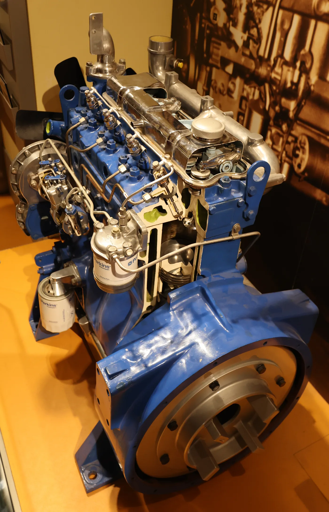
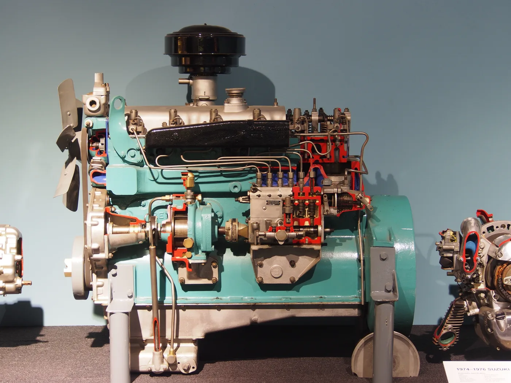

En muchos talleres latinoamericanos, mencionar Perkins despierta recuerdos de tractores, camiones, camionetas, equipos de obra y motores estacionarios. Para unos fue el motor de una máquina que trabajó durante años; para otros, el primero que aprendieron a reparar. Esa memoria explica la pregunta popular: ¿por qué se habla de Perkins con tanto afecto?
Antes de responder, hay que quitar una exageración del título original: no existe una medición que demuestre que Perkins fue “el motor más amado” de toda Latinoamérica. Tampoco hablamos de un solo motor. Perkins es un fabricante con familias y configuraciones diferentes. Lo que sí puede explicarse con fuentes es cómo se extendió por la región y por qué algunos de sus diseños dejaron una huella duradera.
Una marca que llegó con el trabajo, no con una sola máquina
Perkins nació en Peterborough, Inglaterra, en 1932. Su negocio fue desarrollar motores que otros fabricantes instalaran en sus propios vehículos y máquinas. Ese papel de proveedor explica parte de su presencia: un mismo nombre podía aparecer en aplicaciones muy distintas, aunque los motores no fueran iguales entre sí.
La historia regional publicada por la compañía sitúa sus primeros vínculos latinoamericanos en la mecanización agrícola. La fabricación local comenzó en São Paulo, Brasil, en 1959. Durante las décadas siguientes hubo producción en Argentina, Brasil, México, Perú y Uruguay, mediante distintas fórmulas industriales. No fue simplemente una marca importada que llegó a los talleres: en varios países hubo fabricación y una cadena de proveedores alrededor.
En Argentina, una investigación académica de la Universidad Nacional de La Plata fecha en 1961 el comienzo de la producción de Perkins Argentina en Córdoba. Esa presencia industrial ayudó a que el nombre resultara familiar en el país, aunque no demuestra por sí sola que cada motor Perkins visto en una ruta argentina fuera fabricado allí.
El 4.236: cuatro cilindros que llegaron a muchos trabajos
Uno de los nombres que más aparece al hablar de la reputación de Perkins es el 4.236. La historia oficial del modelo indica que su producción empezó en agosto de 1964. El “4” corresponde al número de cilindros y “236” a la cilindrada expresada en pulgadas cúbicas. Fue pensado para aplicaciones variadas: tractores, camiones más pequeños, generadores y autoelevadores, entre otras.
Perkins destaca que el 4.236 incorporó inyección directa en una época de expansión de esa solución. La compañía asocia el cambio con mejores arranques en frío y consumo respecto de diseños anteriores. Eso no significa que todos los 4.236 entregaran la misma potencia o utilizaran los mismos componentes: el motor evolucionó y tuvo derivados para necesidades diferentes.
La siguiente imagen muestra un 4.236 expuesto en un museo británico. Es un ejemplar de referencia para reconocer la familia, no una fotografía de la planta argentina ni la prueba de que la Ford F-100 de la portada lleve ese modelo exacto.

El 6.354: un seis cilindros con alcance internacional
La otra familia clave fue el 6.354. Perkins explica que comenzó a producirse en 1960 y que tuvo aplicaciones en camiones, tractores, equipos industriales y usos marinos. Su diseño incorporó inyección directa y dio lugar a múltiples versiones, incluidas variantes turboalimentadas y cambios posteriores de componentes.
La compañía documenta fabricación bajo acuerdos internacionales en Argentina, México, Perú y Brasil, además de otros países fuera de la región. Esta cercanía industrial importa: permitía adaptar el producto a mercados diversos y formaba técnicos con experiencia en la familia. La disponibilidad de un motor en un país no garantiza que siempre hubiera cualquier repuesto, pero sí ayuda a entender por qué el nombre se difundió tanto.
También conviene deshacer otro mito: “6.354” no designa una única configuración inmutable. Hubo revisiones de culata, refrigeración, distribución y otras piezas. Por eso dos motores que comparten el nombre de familia pueden requerir números de parte distintos. La historia de su éxito es, en parte, la historia de su capacidad de adaptación.
La reputación se construyó en el taller
La fama de un motor no depende solamente de la ficha técnica. Cuando se utiliza en diferentes sectores, más mecánicos aprenden a diagnosticarlo; distribuidores y talleres organizan herramientas, manuales y repuestos; los usuarios comparten experiencias. Esa acumulación de conocimiento puede hacer que una máquina resulte menos intimidante para quien debe mantenerla trabajando. Es una inferencia sobre la difusión del producto, no una prueba de que todo motor Perkins fuera fácil de reparar.
La red de servicio es una parte verificable de esa historia. Perkins señala que el número de serie identifica año, país de fabricación, configuración y piezas originales de cada motor. La empresa registra miles de listas de construcción distintas. En consecuencia, pedir una junta o un filtro simplemente “para un Perkins” puede ser tan impreciso como pedir “una pieza para un camión”.
La Ford F-100 fotografiada en Mar del Plata ilustra bien la dimensión cultural del nombre: la identificación Perkins está a la vista, en una camioneta conservada para un desfile. La foto muestra esa presencia concreta, pero no permite deducir cuántas F-100 similares circularon, qué modificación recibió esa unidad o qué modelo de motor lleva. Una imagen suma memoria; no reemplaza los registros de producción.
Ni todos eran iguales ni eran indestructibles
La palabra “noble” suele usarse para describir un motor que toleró años de trabajo. Pero ningún diésel queda exento de desgaste, contaminación del combustible, problemas de refrigeración o mantenimiento insuficiente. La guía de Perkins recomienda controles de aceite, refrigerante, filtros, separador de agua y correas, con intervalos específicos para cada modelo y aplicación.
Las experiencias individuales deben leerse en contexto. Un motor que funciona bien en una máquina cuidada no demuestra que todos los ejemplares rindan igual después de décadas, y una avería no invalida a toda la marca. También hay que distinguir un Perkins antiguo de inyección mecánica de una familia posterior con otros sistemas de control y emisiones. La reputación histórica no es un permiso para omitir el manual de la unidad.
La imagen siguiente muestra un motor Perkins R6 anterior a los 4.236 y 6.354, conservado en un museo. Sirve para ver que la trayectoria de la marca incluyó varias generaciones de seis cilindros, no un único diseño que se repitió sin cambios.

Qué revisar hoy antes de comprar un repuesto Perkins
El primer dato útil es el número de serie de la placa del motor. Después conviene confirmar familia, versión, año, aplicación y cualquier modificación posterior. Una bomba, un juego de juntas o un filtro que se parece al instalado puede pertenecer a otra lista de construcción. La documentación de posventa de Perkins insiste en identificar la configuración exacta antes de elegir piezas.
Si el motor fue adaptado a otro vehículo, la identificación del camión o tractor por sí sola puede no alcanzar. Hay que mirar el motor real, sus accesorios y las conexiones montadas. En Argentina, donde muchas unidades antiguas tuvieron una larga vida de trabajo, esa comprobación es especialmente valiosa para evitar compras equivocadas y reparaciones repetidas.
Entonces, ¿por qué se lo recuerda tanto?
Porque Perkins fue más que una marca sobre una tapa de válvulas: fabricó en la región, impulsó máquinas de muchos oficios y desarrolló familias capaces de adaptarse a mercados distintos. Los 4.236 y 6.354 son ejemplos documentados de esa amplitud. A su alrededor crecieron experiencia de taller y hábitos de mantenimiento que dejaron recuerdos fuertes.
Decir que fue “el más amado” es una opinión, no un dato estadístico. Decir que se ganó un lugar duradero en la memoria mecánica latinoamericana sí tiene una explicación histórica. Para cuidar esa herencia hoy, lo mejor no es repetir que un Perkins “aguanta todo”, sino identificar cada unidad, mantenerla según su manual y elegir las piezas correctas.